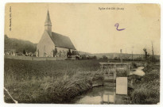
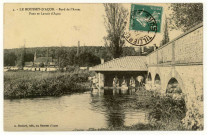
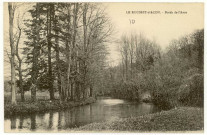
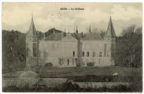
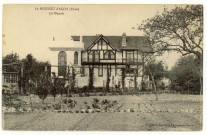
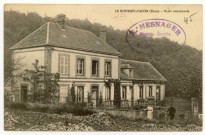
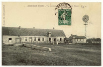
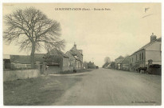
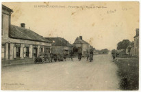

Histoire & Archives
Acon a une histoire étonnamment longue : des bâtisseurs de dolmens il y a près de six mille ans jusqu'aux familles d'aujourd'hui. Voici quelques repères, et surtout où chercher pour aller plus loin.
Repères chronologiques
Quelques jalons
Une frise à taille de village, appuyée sur les sources publiques (Wikipédia, base Mérimée du ministère de la Culture, dictionnaire topographique de l'Eure).
- ≈ 3800 av. J.-C.
Édification de la nécropole dolménique des Prés d'Acon, dans la vallée de l'Avre (Néolithique moyen).
- XIIᵉ s.
Première mention écrite du nom, sous la forme « Acun ». Suivront Agon (1230), Achon (1234), Acoin et Dacon (1242).
- XIIIᵉ-XVIIᵉ s.
Le fief d'Acon appartient à la famille d'Acon, aux confins de la Normandie et du royaume de France.
- 1514 & 1540
Après les destructions de la guerre de Cent Ans, reconstruction de l'église Saint-Denis : la nef en 1514, le chœur vers 1540.
- 1734
Le fief passe à la famille de Guenet, par le mariage de Marie-Élisabeth de Tilly et François-Alexandre de Guenet.
- 1800
Maximum de population de la commune : 819 habitants.
- 1998
L'église Saint-Denis (8 janvier) et la nécropole dolménique (24 février) sont inscrites aux monuments historiques.
- Aujourd'hui
Une commune de 478 Aconnais, réunissant les hameaux des Brûlés, du Mesnil et du Rousset.
Le nom du village
D'où vient « Acon » ?
Le nom est attesté dès le XIIᵉ siècle et son origine reste débattue par les spécialistes. Trois pistes coexistent : une racine gauloise acauno (« la pierre, le rocher »), un thème germanique, ou encore un ancien nom de personne. Rien d'étonnant à cette part de mystère : les noms de nos villages ont traversé mille ans de bouches et de plumes.
Les hameaux
Des noms qui racontent
Le Mesnil, de Le Mesnil-Pipaut, évoque un petit domaine rural et une famille médiévale, les Pipart. Les Brûlés, écrits autrefois « Les Bullez », et Le Rousset, jadis « Le Roiset », complètent le trio. Ensemble, ils forment la commune telle qu'on la connaît, de part et d'autre de l'Avre.
C'est au Rousset que battait le cœur du village d'autrefois : les cartes postales du début du XXᵉ siècle y montrent l'école communale, un château et un manoir, le pont et le lavoir sur l'Avre, autant de lieux que l'on retrouve dans la collection ci-dessous.
Population
Le village au fil du temps
Comme beaucoup de communes rurales, Acon a connu un long reflux au XXᵉ siècle avant de retrouver des couleurs. De 819 habitants en 1800, la population est descendue jusqu'à 250 en 1975, avant de remonter régulièrement pour atteindre 478 aujourd'hui.
Collection
Cartes postales anciennes
Le village d'autrefois, l'église, le lavoir et le pont, les bords de l'Avre, le château et le manoir du Rousset, revit à travers ces cartes postales des années 1890 à 1950, conservées aux Archives départementales de l'Eure (série 8 Fi 2). Cliquez pour les voir en plus grand sur le site des Archives.









Reproductions : Archives départementales de l'Eure, série 8 Fi 2 (cartes postales, [1890]-[1950]). Différents photographes et éditeurs, consulter le fonds « Acon ».
Vous possédez une carte postale ou une photo ancienne d'Acon ? On peut la numériser et l'ajouter ici, avec votre accord. Contribuer à la collection
Aller plus loin
Où consulter les archives d'Acon
- Archives départementales de l'Eure, état civil, registres paroissiaux, cadastre napoléonien, registres militaires. En ligne sur archives.eure.fr ; sur place au 2 rue de Verdun à Évreux (02 32 31 50 84).
- Cassini / EHESS, l'histoire démographique des communes : cassini.ehess.fr.
- Base Mérimée (POP, ministère de la Culture), les notices de l'église Saint-Denis et de la nécropole dolménique.
- La mairie et les habitants, souvent la meilleure source : registres récents, souvenirs et albums de famille.